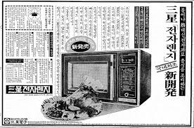
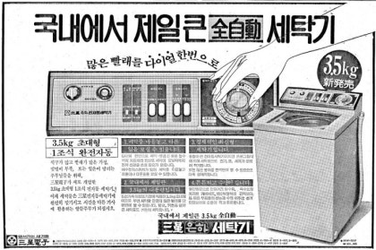
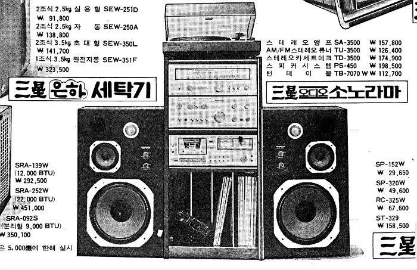
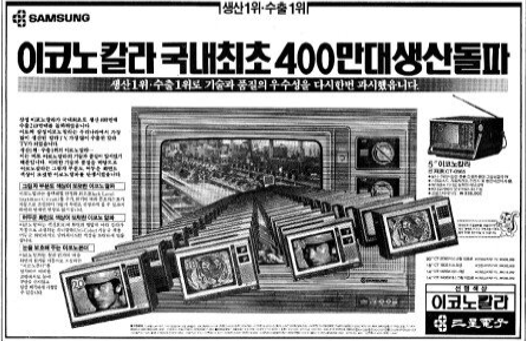
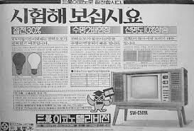
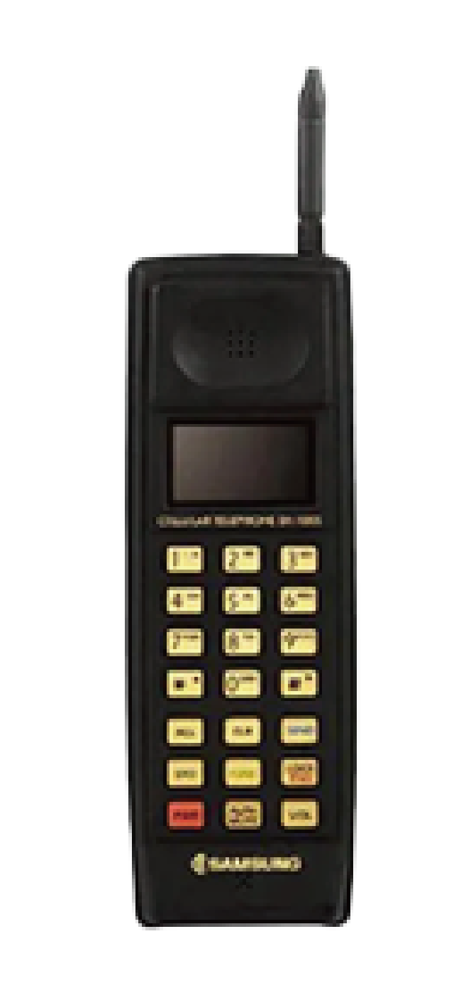

1980
최초 공식 CIP '트라이스타'
해당 로고를 적용하기 시작한 초기인 1980년대 초반에는 일중체(一中體) 기반의 '三星電子' 한자 서체를 병행하여 기용해 사용했다.
이후 1980년대 후반으로 접어들며 컴퓨터, 반도체 가공 등 초정밀 첨단 정보통신 기기 영역으로 사업 다각화가 이루어졌고,
1988년 11월 1일 삼성반도체통신을 최종 합병하는 조직 개편을 거친 직후인 동년 말부터 세련되고 깔끔한 한글 인쇄체 타이포그래피로 완전 교체되었다.
크고, 강력하고, 영원하라'는 염원을 담은 3개의 별 모양이 좌측에 배치된 마지막 로고이다.
조직 및 사업 구조의 변화
1980년대 삼성전자는 글로벌 시장 진출 및 반도체·가전의 대중화를 이뤄낸 격동기였습니다.
당시 컬러 TV와 카세트 라디오, 최초의 한국형 전자레인지 등이 출시되며 폭발적인 성장을 기록했습니다.
1980
최초 공식 CIP '트라이스타'
해당 로고를 적용하기 시작한 초기인 1980년대 초반에는 일중체(一中體) 기반의 '三星電子' 한자 서체를 병행하여 기용해 사용했다.
이후 1980년대 후반으로 접어들며 컴퓨터, 반도체 가공 등 초정밀 첨단 정보통신 기기 영역으로 사업 다각화가 이루어졌고,
1988년 11월 1일 삼성반도체통신을 최종 합병하는 조직 개편을 거친 직후인 동년 말부터 세련되고 깔끔한 한글 인쇄체 타이포그래피로 완전 교체되었다.
크고, 강력하고, 영원하라'는 염원을 담은 3개의 별 모양이 좌측에 배치된 마지막 로고이다.
조직 및 사업 구조의 변화
1980년대 삼성전자는 글로벌 시장 진출 및 반도체·가전의 대중화를 이뤄낸 격동기였습니다.
당시 컬러 TV와 카세트 라디오, 최초의 한국형 전자레인지 등이 출시되며 폭발적인 성장을 기록했습니다.

전자레인지 (RE-777BR)
1987년 출시된 제품으로, 밥과 찌개를 조리할 수 있는 기능이
정체성의 핵심이었습니다.

은하세탁기 모델명 (SEW-200)
삼성전자가 출시한 대한민국 최초의 자체 생산 세탁기 브랜드입니다.
1차 오일쇼크 시기 절전·절수형 가전으로 인기를 끌며
"은하가 돌면 살림이 가벼워진다"는 광고 문구로 유명해졌습니다

카세트 라디오 (RCD-1000)
라디오와 카세트테이프 재생이 결합된 음향 기기가 대중화되었습니다


이코노 TV (SW-C3761 / SW-C3762)
1977년 삼성전자가 개발한 국내 최초의 컬러 이코노 TV 모델명입니다. 초창기에는 국내 컬러 방송이 허가되지 않아 파나마 등 해외 수출에 주력했습니다.
오일쇼크라는 시대적 배경에 맞추어 '에너지 절약'과 '속도'를 최우선으로 혁신한 제품입니다.

삼성 최초의 휴대전화 (SH-100)
1989년에 정식 출시된 대한민국 최초의 자체 개발 휴대전화(1호 국산폰)입니다.
앞서 말씀드린 '이코노 TV'가 삼성전자 가전 역사의 서막을 열었다면,
SH-100은 오늘날 갤럭시 시리즈로 이어지는 모바일 신화의 뿌리가 된 제품입니다.